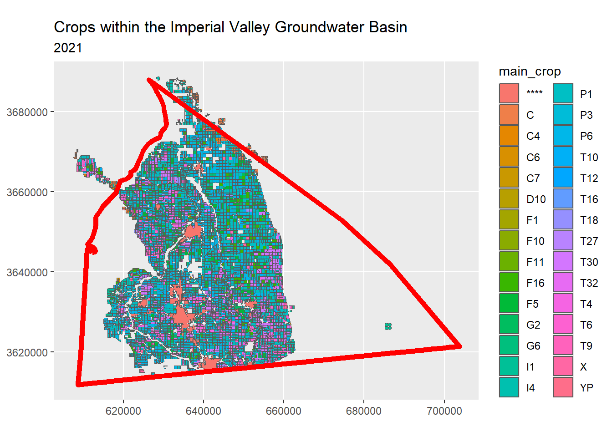
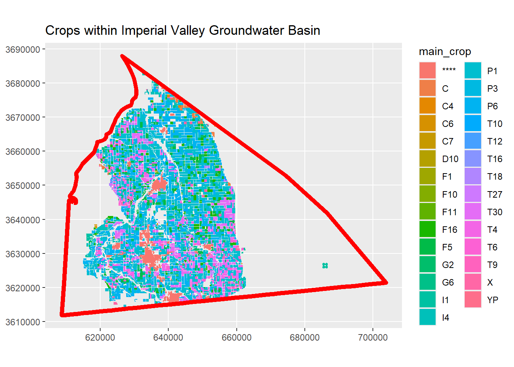
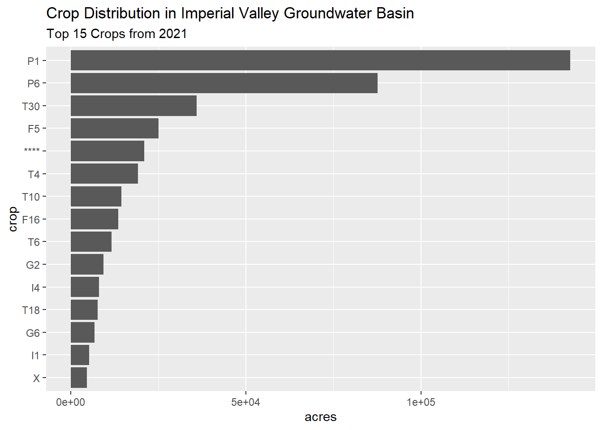

How to Summarize Crop Distribution for any Area-of-Interest in California with R
Andy Lyons ![]()
IGIS Tech Notes describe workflows and techniques for using geospatial science and technologies in research and extension. They are works in progress, and we welcome feedback and comments.
Summary
This Tech Note illustrates how to tabulate the distribution of crops for any area of interest in CA using R. For the crop layer, it uses the 20211 Statewide Crop Mapping Layer from CA DWR. For the area-of-interest, this example uses a groundwater basin for Imperial Valley, but the method will work with any polygon in CA.
More specifically, this Tech Note shows how to:
- Import a polygon area-of-interest from a local GIS file
- Import the 2021 Statewide Crop Mapping Layer for the AOI using the downloaded geodatabase
- Explore the Statewide Crop Mapping layer, including the metadata and field codes
- Intersect the Statewide Crop Mapping layer with the AOI
- Compute the total area for each crop, including the percent of the AOI
Setup
To begin, load the packages we’ll be using:
Next, we define a few EPSG codes (used to define projections), that we’ll need later:
epsg_geo_wgs84 <- 4326
epsg_geo_nad83 <- 4269
epsg_utm11n_wgs84 <- 32611Import an Area-of-Interest
Next, we import our area-of-interest from a GIS file. For this example, we will use the groundwater basin for Imperial Valley which has been saved as a geojson file (code). But the same basic technique would work with any simple feature polygon as long as it falls within California.
impval_gndwtr_sf <- st_read("imperial-valley-groundwater-basin-2016.geojson")Reading layer `imperial-valley-groundwater-basin-2016' from data source
`D:\GitHub\tech_notes\tech_notes\docs\imperial-valley-groundwater-basin-2016.geojson'
using driver `GeoJSON'
Simple feature collection with 1 feature and 8 fields
Geometry type: POLYGON
Dimension: XY
Bounding box: xmin: -115.8418 ymin: 32.63896 xmax: -114.8255 ymax: 33.32349
Geodetic CRS: WGS 84## Preview it
leaflet(data = impval_gndwtr_sf) |>
addProviderTiles("Esri.WorldImagery") |>
leaflet::addPolygons()Open the 2021 Statewide Crop Mapping dataset
This Tech Note uses a local copy of the 2021 Statewide Crop Mapping data saved as a geodatabase. This copy was downloaded from the CNRA Open Data Hub and unzipped.
We are using a local copy of the crop distribution data because:
- accessing a local geodatabase will give us the fastest performance (compared to importing the data from the CNRA ArcGIS Server, although that can also be done).
- the size of the data is manageable (the zip file is 90 MB, and unzipped is 207 MB).
- the links to the online layers (i.e., Map Service) seem to be broken (or require a login), so we don’t have much alternative.
Step 1 is to view the layers in the geodatabase:
dwr_cropmapping_gdb <- "./statewide_cropdist_2021/i15_Crop_Mapping_2021.gdb"
dir.exists(dwr_cropmapping_gdb)[1] TRUEst_layers(dwr_cropmapping_gdb)Driver: OpenFileGDB
Available layers:
layer_name geometry_type features fields crs_name
1 i15_Crop_Mapping_2021 3D Measured Multi Polygon 431145 56 NAD83Exploring the Statewide Crop Distribution Layer
The best way to explore the Statewide Crop Distribution Layer is to open it up in ArcGIS Pro. The zip file from DWR contains both a geodatabase as well as an ArcGIS Pro layer file (CropMapping2021_Legend.lyrx). Double-click the layer file to open it up in ArcGIS Pro. You will probably need to reestablish the link to the data (layer properties > source), but after that you should be you’re good to go.
A good way to learn about a dataset is to read the metadata. The geodatabase appears to be the only source for the layer’s ‘metadata’. In other words, there is no sign of metadata on the DWR website or open data hub2.
However even the ‘metadata’ does not provide a field-by-field description, but you can make educated guesses by looking at the field properties and domains that are saved in the geodatabase (see below).
Reading the metadata and exploring the data more thoroughly in ArcGIS Pro is an extremely good idea if you’ll be using these data for research. In addition to the MAIN_CROP field (which is all we’re using in this notebook), there are 56 other fields that contain useful information including multi-cropping characteristics, crop category (as opposed to crop type), year the crop was established (i.e., for perennial crops), whether the classification was updated / revised by DWR, notes from the analyst, etc.
Which attribute field contains the ‘crop’?
The attribute table for the Statewide Crop Mapping layer has 57 fields 😮. Determining which field has the “crop” name requires some sleuthing, as there are several candidates whose name suggest it might be the crop name. DWR unfortunately does not publish a data dictionary for the data, but if you open the geodatabase in ArcGIS Pro you can see i) the ‘domains’ (list of codes and their descriptions used in several fields), and ii) descriptive metadata that contains clues about the methodology.
The code below only imports 5 of the 57 fields. The field we will use below as “the crop” is MAIN_CROP, which the metadata describes as:
A new column for the 2019, 2020, and 2021 datasets is called ‘MAIN_CROP’. This column indicates which field Land IQ identified as the main season crop for the WY representing the crop grown during the dominant growing season for each county.
Figuring out the Codes
Many of the attribute fields in the crop distribution layer contain codes or abbreviations. The descriptions that go with these codes are not documented anywhere online, unfortunately. However if you open the geodatabase in ArcGIS Pro, you can view the ‘domains’ (which is what ESRI calls code lists). For convenience, the domains have been also exported as tables saved in another geodatabase: Crop_Mapping_2021_domains.gdb (zip).
domains_gdb <- "./statewide_cropdist_2021/Crop_Mapping_2021_domains.gdb"
dir.exists(domains_gdb)
st_layers(domains_gdb)[1] TRUE
Driver: OpenFileGDB
Available layers:
layer_name geometry_type features fields crs_name
1 allClas_dom_5 NA 27 2 <NA>
2 allCropType_dom_3 NA 59 2 <NA>
3 AllIrrigTypA_dom NA 3 2 <NA>
4 AllIrrigTypB_dom NA 17 2 <NA>
5 AllMultiUse_dom NA 6 2 <NA>
6 allNotes_dom NA 129 2 <NA>
7 AllPCNT_dom NA 101 2 <NA>
8 allSpecCond_dom_2 NA 20 2 <NA>
9 allSubclass_dom_1 NA 33 2 <NA>All 9 of these ‘domains’ are code lists used in one or more of the 57 fields in the attribute table.
Import the Crop Type Descriptions
Let’s import the “crop types” domain, which we’re gonna need to interpret the MAIN_CROP field:
croptypes_tbl <- st_read(domains_gdb,
layer = "allCropType_dom_3",
as_tibble = TRUE,
quiet = TRUE) |>
rename(code = Code, description = Description)
knitr::kable(croptypes_tbl, format = "html")| code | description |
|---|---|
| **** | **** |
| C | Citrus and Subtropical - No Subclass |
| C4 | Dates |
| C5 | Avocados |
| C6 | Olives |
| C7 | Subtropical Fruits Misc. |
| C8 | Kiwis |
| C10 | Eucalyptus |
| D1 | Apples |
| D2 | Apricots |
| D3 | Cherries Cherries |
| D5 | Peaches and Nectarines |
| D6 | Pears |
| D7 | Plums |
| D8 | Prunes |
| D10 | Deciduous - Misc. |
| D12 | Almonds |
| D13 | Walnuts |
| D14 | Pistachios |
| D15 | Pomegranates |
| D17 | Pecans |
| F1 | Cotton |
| F2 | Safflower |
| F5 | Sugar beets |
| F10 | Beans (dry) |
| F11 | Field Misc. |
| F12 | Sunflowers |
| F16 | Corn, Sorghum or Sudan (grouped for remote sensing classification only) |
| G2 | Wheat |
| G6 | Grain and Hay - Misc. |
| I1 | Idle - Land not cropped in current or prior year, but within last 3 yrs. |
| I4 | Idle - Long Term - land consistently idle for four or more years |
| P1 | Alfalfa and alfalfa mixtures |
| P3 | Pasture - Mixed |
| P4 | Pasture - Native Improved |
| P5 | Pasture - Induced High Water |
| P6 | Pasture - Miscellaneous Grasses |
| P7 | Pasture - Turf Farms |
| R1 | Rice |
| R2 | Rice - Wild |
| T4 | Cole crops (mixture of T22-T25) |
| T6 | Carrots |
| T9 | Melons, Squash, and Cucumbers |
| T10 | Onions and Garlic |
| T12 | Potatoes |
| T13 | Sweet Potatoes |
| T16 | Flowers, nursery and Christmas Tree Farms |
| T18 | Truck Crops - Misc. |
| T19 | Bushberries |
| T20 | Strawberries |
| T21 | Peppers (Chili, Bell, etc.) |
| T27 | Greenhouse |
| T30 | Lettuce or Leafy Greens (grouped for remote sensing classification only) |
| T32 | Tomatoes (all) |
| U | Urban - Unspecified Residential, Commercial, Industrial |
| UL2 | Urban Landscape - Golf Course Irrigated |
| V | Vineyards - No Subclass |
| X | Not cropped, or unclassified at the time of remote-sensing analysis. Idle status not determined |
| YP | Young Perennial (grouped for remote sensing or when CLASS C, D or V is not determined) |
Import the Statewide Crop Mapping layer for just the AOI
Next, we’ll import the crop distribution polygons using sf::st_read(). We could import it all, but to save time (and memory) we’ll only import polygons that intersect our AOI.
To add a spatial filter when we import the data, we need to define the bounding box and express it as WKT3 (i.e., a character object). Note that we also have to transform the bounding box to geographic coordinates from the NAD83 datum, because that’s the CRS of the crop distribution layer.
impval_gndwtr_nad83_sf <- impval_gndwtr_sf |>
st_transform(epsg_geo_nad83)
bbox_wkt <- st_bbox(impval_gndwtr_nad83_sf) |>
st_as_sfc() |>
st_as_text()
bbox_wkt[1] "POLYGON ((-115.8418 32.63896, -114.8255 32.63896, -114.8255 33.32349, -115.8418 33.32349, -115.8418 32.63896))"Now we can import the crop distribution layer for the bounding box. While we’re at it, we’ll also project it to UTM (because soon we’ll be computing areas), and join it to the full names of the crop types.
crpdst_bbox_sf <- st_read(dsn = dwr_cropmapping_gdb,
layer = "i15_Crop_Mapping_2021",
wkt_filter = bbox_wkt) |>
st_transform(epsg_utm11n_wgs84) |>
select(main_crop = MAIN_CROP, class2 = CLASS2, yr_planted = YR_PLANTED,
data_status = DataStatus, multiuse = MULTIUSE) |>
left_join(croptypes_tbl, by = c("main_crop" = "code"))Reading layer `i15_Crop_Mapping_2021' from data source
`D:\GitHub\tech_notes\tech_notes\docs\statewide_cropdist_2021\i15_Crop_Mapping_2021.gdb'
using driver `OpenFileGDB'
Simple feature collection with 7291 features and 56 fields
Geometry type: MULTIPOLYGON
Dimension: XYZ
Bounding box: xmin: -115.8481 ymin: 32.65474 xmax: -115.0058 ymax: 33.32963
z_range: zmin: 0 zmax: 0
Geodetic CRS: NAD83head(crpdst_bbox_sf)Next, we project the AOI to UTM and compute the total area (which we’ll need below):
impval_gndwtr_utm_sf <- st_transform(impval_gndwtr_sf, epsg_utm11n_wgs84)
aoi_m2 <- st_area(impval_gndwtr_utm_sf)Next, we can overlay the AOI and the cropped crop layer:
ggplot(crpdst_bbox_sf, aes(fill = main_crop)) +
geom_sf() +
geom_sf(data = impval_gndwtr_utm_sf,
colour = "red",
fill = NA,
lwd = 2) +
coord_sf(datum = st_crs(epsg_utm11n_wgs84)) +
labs(title = "Crops within the Imperial Valley Groundwater Basin",
subtitle = "2021")
Display a “legend”:
crops_in_this_area <- unique(crpdst_bbox_sf$main_crop)
croptypes_tbl |> filter(code %in% crops_in_this_area) |> knitr::kable(format="html")| code | description |
|---|---|
| **** | **** |
| C | Citrus and Subtropical - No Subclass |
| C4 | Dates |
| C6 | Olives |
| C7 | Subtropical Fruits Misc. |
| D10 | Deciduous - Misc. |
| F1 | Cotton |
| F5 | Sugar beets |
| F10 | Beans (dry) |
| F11 | Field Misc. |
| F16 | Corn, Sorghum or Sudan (grouped for remote sensing classification only) |
| G2 | Wheat |
| G6 | Grain and Hay - Misc. |
| I1 | Idle - Land not cropped in current or prior year, but within last 3 yrs. |
| I4 | Idle - Long Term - land consistently idle for four or more years |
| P1 | Alfalfa and alfalfa mixtures |
| P3 | Pasture - Mixed |
| P6 | Pasture - Miscellaneous Grasses |
| T4 | Cole crops (mixture of T22-T25) |
| T6 | Carrots |
| T9 | Melons, Squash, and Cucumbers |
| T10 | Onions and Garlic |
| T12 | Potatoes |
| T16 | Flowers, nursery and Christmas Tree Farms |
| T18 | Truck Crops - Misc. |
| T27 | Greenhouse |
| T30 | Lettuce or Leafy Greens (grouped for remote sensing classification only) |
| T32 | Tomatoes (all) |
| X | Not cropped, or unclassified at the time of remote-sensing analysis. Idle status not determined |
| YP | Young Perennial (grouped for remote sensing or when CLASS C, D or V is not determined) |
Intersect the Crop Polygons with the AOI
We are almost done, but we still have some polygons outside our non-rectangular AOI. To get only the polygons within the AOI, we have to take the intersection:
crops_aoi_sf <- crpdst_bbox_sf |>
st_intersection(impval_gndwtr_utm_sf) |>
mutate(area_m2 = st_area(Shape)) |>
select(-description) |>
relocate(area_m2, .before = Shape) Warning: attribute variables are assumed to be spatially constant throughout
all geometriescrops_aoi_sf |> head()Plot these with the AOI boundary:
ggplot(crops_aoi_sf, aes(fill = main_crop)) +
geom_sf(color = NA) +
geom_sf(data = impval_gndwtr_utm_sf,
colour = "red",
fill = NA,
lwd = 2) +
coord_sf(datum = st_crs(epsg_utm11n_wgs84)) +
labs(title = "Crops within Imperial Valley Groundwater Basin")
This looks good!
Compute the Total Area for Each Crop
We can now compute the total area for each crop as well as percent of the AOI covered:
crop_sumaoi_tbl <- crops_aoi_sf |>
st_drop_geometry() |>
group_by(main_crop) |>
summarise(crop_area_m2 = round(sum(area_m2)), .groups = "drop") |>
mutate(prcnt_aoi = round(as.numeric(crop_area_m2 / aoi_m2), 2)) |>
left_join(croptypes_tbl, by = c("main_crop" = "code")) |>
select(crop = main_crop, description = description, crop_area_m2, prcnt_aoi) |>
arrange(desc(prcnt_aoi))
crop_sumaoi_tbl |> knitr::kable(format="html")| crop | description | crop_area_m2 | prcnt_aoi |
|---|---|---|---|
| P1 | Alfalfa and alfalfa mixtures | 577237615 [m^2] | 0.15 |
| P6 | Pasture - Miscellaneous Grasses | 354501432 [m^2] | 0.09 |
| T30 | Lettuce or Leafy Greens (grouped for remote sensing classification only) | 145445534 [m^2] | 0.04 |
| F5 | Sugar beets | 101300822 [m^2] | 0.03 |
| **** | **** | 84757653 [m^2] | 0.02 |
| T10 | Onions and Garlic | 58496668 [m^2] | 0.02 |
| T4 | Cole crops (mixture of T22-T25) | 77299581 [m^2] | 0.02 |
| F16 | Corn, Sorghum or Sudan (grouped for remote sensing classification only) | 54723225 [m^2] | 0.01 |
| G2 | Wheat | 37399621 [m^2] | 0.01 |
| G6 | Grain and Hay - Misc. | 27437013 [m^2] | 0.01 |
| I1 | Idle - Land not cropped in current or prior year, but within last 3 yrs. | 20883141 [m^2] | 0.01 |
| I4 | Idle - Long Term - land consistently idle for four or more years | 32687467 [m^2] | 0.01 |
| T18 | Truck Crops - Misc. | 30757896 [m^2] | 0.01 |
| T6 | Carrots | 46814724 [m^2] | 0.01 |
| C | Citrus and Subtropical - No Subclass | 11598121 [m^2] | 0.00 |
| C4 | Dates | 2590187 [m^2] | 0.00 |
| C6 | Olives | 1309333 [m^2] | 0.00 |
| C7 | Subtropical Fruits Misc. | 607722 [m^2] | 0.00 |
| D10 | Deciduous - Misc. | 66086 [m^2] | 0.00 |
| F1 | Cotton | 143078 [m^2] | 0.00 |
| F10 | Beans (dry) | 201272 [m^2] | 0.00 |
| F11 | Field Misc. | 955085 [m^2] | 0.00 |
| P3 | Pasture - Mixed | 692253 [m^2] | 0.00 |
| T12 | Potatoes | 4864235 [m^2] | 0.00 |
| T16 | Flowers, nursery and Christmas Tree Farms | 145414 [m^2] | 0.00 |
| T27 | Greenhouse | 32406 [m^2] | 0.00 |
| T9 | Melons, Squash, and Cucumbers | 12096649 [m^2] | 0.00 |
| X | Not cropped, or unclassified at the time of remote-sensing analysis. Idle status not determined | 18560407 [m^2] | 0.00 |
| YP | Young Perennial (grouped for remote sensing or when CLASS C, D or V is not determined) | 25842 [m^2] | 0.00 |
Visualize the top-15 as a bar chart:
df <- crop_sumaoi_tbl |>
slice_max(order_by = crop_area_m2, n = 15) |>
mutate(crop_area_ac = as.numeric(set_units(crop_area_m2, acres)))
ggplot(df, aes(x = crop_area_ac, y = reorder(crop, crop_area_ac))) +
geom_bar(stat = "identity") +
labs(title = "Crop Distribution in Imperial Valley Groundwater Basin",
subtitle = "Top 15 Crops from 2021") +
xlab("acres") +
ylab("crop")
## Legend
df |> arrange(desc(crop_area_ac)) |> select(crop, description) |> knitr::kable(format = "html")| crop | description |
|---|---|
| P1 | Alfalfa and alfalfa mixtures |
| P6 | Pasture - Miscellaneous Grasses |
| T30 | Lettuce or Leafy Greens (grouped for remote sensing classification only) |
| F5 | Sugar beets |
| **** | **** |
| T4 | Cole crops (mixture of T22-T25) |
| T10 | Onions and Garlic |
| F16 | Corn, Sorghum or Sudan (grouped for remote sensing classification only) |
| T6 | Carrots |
| G2 | Wheat |
| I4 | Idle - Long Term - land consistently idle for four or more years |
| T18 | Truck Crops - Misc. |
| G6 | Grain and Hay - Misc. |
| I1 | Idle - Land not cropped in current or prior year, but within last 3 yrs. |
| X | Not cropped, or unclassified at the time of remote-sensing analysis. Idle status not determined |
Conclusion
The Statewide Crop Mapping layer from CA DWR is an important dataset with many uses in the agricultural sector. It is relatively easy to analyze in R, provided you know where to find the metadata and field values (i.e., domains). Once in R, you can easily compute crop statistics for any area-of-interest using powerful functions from sf and dplyr.
![]()